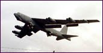

Friday March 26 1999
Nato jets
lash Serbia

Serb forces exacted a swift and brutal revenge for the NATO air strikes, breaking into the houses of leading ethnic Albanian activists in Pristina and hauling them away.
As armoured cars deployed all over the centre of the capital on Thursday, five bombs exploded in ethnic Albanian suburbs, apparently planted by Serb extremists.
The crackdown came as the Serbs intensified their offensive against the forces of the rebel Kosovo Liberation Army.
Mr Bayram Kelmendi, Kosovo's most prominent human rights lawyer, was with his family in an ethnic Albanian suburb of Pristina when the police lobbed a home-made bomb through the door and dragged him and his two sons away. His wife, Nekibe, said: "They told my son, Kastriot, to kiss his children for the last time, that he would never see them again."
They were repeatedly hitting Mr Kelmendi in the chest.
As the Serbs took Mr Kelmendi and his sons away, one shouted: "So you wanted a republic and we have to give it you now." Fighting back her tears, Mrs Kelmendi insisted she stillsupported the NATO action. "The plan is good," she said. "They should destroy them. They have been doing this for more than a year."
As she spoke there were reports of the arbitrary arrest of other activists all over Pristina.
Three of the five bomb explosions in the Albanian suburbs were near the offices of the United States Information Service.
the News
Ford dumps Newman
NSW Libs crisis
Biggest deficit
Hancock v Porteous
Holmes a Court saga
Virus bugs Web